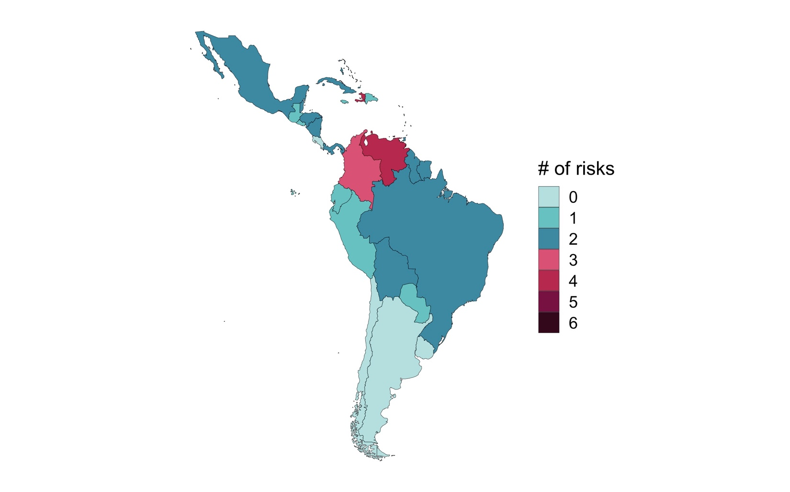

8 ANNEX
Table 1: Indicator selection of each compound risk dimension: How underlying vulnerability is reflected in the CRM
| Quality of indicators (Q) | GOOD |
|---|---|
| ACCEPTABLE | |
| POOR |
| INDICATOR NAME | INDICATOR DESCRIPTION | NORM. BOUNDS AND THRESHOLDS | SOURCE INDICATORS | AGGREGATION | Q |
|---|---|---|---|---|---|
| FOOD SECURITY RISK | |||||
| F_Proteus_Score_norm | WFP Proteus composite index, measuring multidimensional aspects of food security | Normalised using a min/max procedure with an upper bound of 90th pct and lower bound of 10th pct | Multidimensional index made up of grouped indicators for: Availability; Access; Utilization; and Stability | N/A Single Index |
|
| NOTES: Index only runs till 2017. The CRM may want to consider updating WFP’s methodology using data gathered through 2020, as well as assigning thresholds on the basis of expert derived values (rather than percentiles). Alternatives include the Global Food Security Index, as well as metrics on the prevalence of undernourishment and food consumption | |||||
| CONFLICT FRAGILITY AND INSTITUTIONAL RISK | |||||
| Fr_FCV_normalised | World Bank’s Fragile and Conflict-affected Situations list | Assigned values in consultation with FCV. 10 = If on FCS list 0 = If not on FCS list (based on FCS thresholds) |
Multidimensional index including information on the following: Country Policy and Institutional Assessment (CPIA) scores, whether a UN peacekeeping operation is present, the severity of border flight, and conflict-related deaths. | N/A Single Index |
|
| NOTES. CRM team will continue to liaise with FCV’s ongoing conflict risk monitoring initiative to ensure consistency in indicator selection and thresholds. | |||||
| MACRO-FISCAL | |||||
| M_EIU_Score_12m_norm | Economist Intelligence Unit’s Country-level Operational Risk Score: a multi-dimension index tracking macro-fiscal conditions updated on a monthly basis Values are derived as an average of EIU scores for the previous 12 months (in order to be compatible with other risk dimensions) |
Normalised using a min/max procedure with an upper bound of 75 and lower bound of 15. | A multidimensional index comprised of grouped indicators relating to: financial risk, foreign trade & payments risk, infrastructure risk, labour market risk, legal & regulatory risk, macroeconomic risk, and tax policy risk. | EXISITING_M = MAX(M_EIU_risk_norm, D_WB_Overall_debt_distress_norm, M_cvi_risk_norm) |
|
| Alternatives: An alternative index is currently under development together with MTI, FCI, CROCR and the Prospects Group | |||||
| HEALTH-SYSTEMS, DISEASE OUTBREAKS AND RESPONSE | |||||
| H_HIS_Score_norm | Global Health Score Index, a composite index made up of a variety of health-related indicators | Normalised using a min/max procedure with an upper bound of 20 and lower bound of 70 | GHS is made up of six categories (comprised of 34 indicators, 85 sub-indicators). The categories include: prevention; detection and reporting; rapid response; health system; compliance with international norms; and risk environment. For more details see link. | EXISITING_H = MAX(H_HIS_Score_norm, H_INFORM_rating.Value_norm) | |
| H_INFORM_rating.Value_norm | INFORM COVID vulnerability Risk Index | Normalised using a min/max procedure with an upper bound of 6 and lower bound of 2 (based on INFORM thresholds) |
Composite Index including a range of exposure, vulnerability and coping capacity indicators specific to COVID-19 | ||
| NATURAL HAZARD RISK | |||||
| NH_Hazard_Score_norm | Natural multi-hazard rating (INFORM) – 2020 data | Normalised using a min/max procedure with an upper bound of 95th pct and lower bound of 5th pct | Historical rates of exposure and sensitivity to earthquake, tsunami, flood, cyclone, storm surge and drought risk. For more details see link. |
EXISITING_NH = MAX(NH_Hazard_Score_norm, NH_multihazard_risk_norm) |
|
| NH_multihazard_risk_norm | ThinkHazard! Database of natural hazard risks (World Bank) | Normalised using a min/max procedure with an upper bound of 4 hazards and lower bound of 0 hazards | Classification of hazards based on the likelihood of the hazard exceedance to predefined thresholds. Thresholds are based on hazard frequency/intensity and set using expert judgement. | ||
| NOTES: The CRM team will continue to consult with sector experts to assign designated thresholds rather than percentiles | |||||
| SOCIOECONOMIC VULNERABILITY RISK | |||||
| S_INFORM_vul_norm | Composite index comprised of a range of socio-economic variables compiled by INFORM | Normalised using a min/max procedure with an upper bound of 95th pct and lower bound of 5th pct | Comprised of grouped indicators relating to: development and deprivation (50%); inequality (25%) and economic dependence (25%). | N/A Single Index |
Table 2: How forward-looking risk is reflected in the CRM
| Quality of indicators (Q) | GOOD |
|---|---|
| ACCEPTABLE | |
| POOR |
| INDICATOR NAME | INDICATOR DESCRIPTION | NORMALISED BOUNDS | AGGREGTION | Q |
|---|---|---|---|---|
| FOOD SECURITY RISK | ||||
| F_Fewsnet_Score_norm | FEWSNET IPC classification (near term) adjusted. Thresholds chosen to align with CRW ERF trigger. |
Assigned values based on CRW threshold: 10 = CRW threshold |
IF FEWSNET OR F_fao_wfp_warning country then FS = MAX(F_FEWSNET_SCORE, F_fao_wfp_warning ) ELSE FS = F_fpv_rating |
|
| F_fao_wfp_warning | Food security early warning released jointly by FAO and WFP. Thresholds chosen to align with FAO/WFP classification. |
10 = on FAO/WFP list of early warning countries 0 = if not on FAO/WFP list |
||
| F_fpv_rating | Food Price Inflation (gathered by WB’s Food Price Monitor). Thresholds chosen to align with FRM classification. |
Assigned values based on IPA threshold: 10 = FPV above 30% 7 = FPV between 5-30% 5 = FPV between 2-5% 1 = FPV below 2% |
||
| NOTES Primary challenge in finding robust information for non FEWSNET covered countries. CRM team will seek to draw food price data and additional FS indicators from the WB’s Food Security Monitoring Hub. Alternatives: NDVI / GIEWS / WB Food Security Monitoring Hub | ||||
| MACRO-FISCAL | ||||
| M_EIU_12m_change_norm | Point change in the Economist Intelligence Unit’s Country-level Operational Risk Score: a multi-dimension index tracking macro-fiscal conditions updated on a monthly basis Values are based on the difference between the latest EIU monthly score and an average of scores over the past 12 months. |
Normalised using a min/max procedure with an upper bound of -2 and lower bound of -2 | N/A | |
| NOTES: An alternative index is currently under development together with MTI, FCI, CROCR and the Prospects Group | ||||
| FRAGILITY AND CONFLICT RISK | ||||
| Fr_fatal_z_norm | Fatalities related to violent events, demonstrations or non-violent actions (ACLED). Indicator is calculated as 3-month running Z-scores using 3-month means and standard deviations for the past three years. Thresholds assigned by FCV |
Normalised using a min/max procedure with an upper bound of 1 and lower bound of -1 | Fr = MAX(Fr_REIGN_Normalised, Fr_Displaced_UNHCR_Normalised, Fr_BRD_Normalised ) |
|
| Fr_REIGN_Normalised |
Indicator is formed by summing results from 4 REIGN binary variables, including: successful coup; attempted coup; delayed election; and irregular election. Inputs from election variables are only considered in FCS countries. Thresholds assigned by FCV |
10 = at least one event across the REIGN indicators 0 = no events across the REIGN indicators |
||
| Fr_Displaced_UNHCR_Normalised, | Number of people forcibly displaced (UNHCR) Calculated as Z scores using annual mean and standard deviations for the past five years. 2019 values are used as the CRM output Thresholds assigned by FCV |
Normalised using a min/max procedure with an upper bound of 1 and lower bound of 0 | ||
| NOTES: To be updated based on coordination with FCV’s Conflict Risk Monitoring Initiative. | ||||
| SOCIOECONOMIC VULNERABILITY | ||||
| S_unemployment.Rating_norm | Percentage point change in proportion of people unemployed between 2021-2020 and 2020-201925 (IMF forecast) | Normalised using a min/max procedure with an upper bound of 1 and lower bound of 0 for 2021-2019; upper bound of 3 and lower bound of 0 for 2020-2019 | S = MAX(S_pov_prop_19_20_norm, S_unemployment.Rating_norm, S_income_support.Rating_norm, S_phone_average_index_norm) |
|
| S_income_support.Rating_norm | Whether income support is provided during COVID (INFORM) | Assigned values based on INFORM risk thresholds 10 = Government replacing > 50% of lost salary |
||
| S_pov_prop_19_20_norm | Percentage point change in the proportion of people below $1.90 poverty line between 2021-2020 and 2020-201926 (WB/MPO) | Normalised using a min/max procedure with an upper bound of 1 and lower bound of 0 for 2021-2019; upper bound of 3 and lower bound of 0 for 2020-2019 | ||
| S_phone_average_index_norm | Index of questions included in the WB’s COVID phone surveys. Features a normalised average of questions relating to: employment opportunities; food accessibility; savings; and government assistance. | Normalised using a min/max procedure with an upper bound of 7 and lower bound of 2 | ||
| NATURAL HAZARD RISK | ||||
| NH_seasonal_risk_norm | Measure of the proportion of a country projected to experience above or below average rainfall (with 60+ likelihood and above) using Columbia IRI’s seasonal forecast. To be updated based on ongoing research and collaboration with IRI | 10 = Between 50 and 100% of country affected by above/below average rainfall 7 = Between 10 and 50% 0 = Below 10 % |
MAX(NH_seasonal_risk_norm, NH_GDAC_Hazard_Score_Norm, NH_INFORM_Crisis_Norm, NH_locust_norm) | |
| NH_INFORM_Crisis_Norm | INFORM Crisis monitor with live tracking of natural hazard events | Assigned value: 10 = if ongoing Natural Hazard crisis 0 = no ongoing Natural Hazard crisis |
||
| NH_GDAC_Hazard_Score_Norm | GDACS live natural hazard tracker | Assigned value: 10 = if ongoing Natural Hazard 0 = no ongoing Natural Hazard |
||
| NH_locust_norm | FAO desert locust outbreak risk | Assigned value: 10 = High risk based on FAO thresholds 7 = Medium risk based on FAO tresholds 0 = Low risk based on FAO thresholds |
||
| NOTES: Thresholds for seasonal precipitation are temporary and will be updated based on ongoing research together with IRI. Alternatives: Flood outlook (GLOFAS) – 4 month seasonal outlook + 10-day forecast. Drought monitor/outlook (IRI Global SPI Index / SPEI / CHIRPS / EDO). Live cyclone tracks (Cyclocane) – 1-10 day. Live natural hazard trackers –USGS / RSOE / GDACS / Reliefweb / Copernicas / PDC | ||||
| HEALTH-SYSTEMS, DISEASE OUTBREAKS AND RESPONSE | ||||
| H_Covidgrowth_casesnorm | Bi-weekly percentage change in COVID cases (per 1M) | Normalised using a min/max procedure with an upper bound of 150 and lower bound of 0 | H = MAX(H_Oxrollback_score_norm, H_Covidgrowth_casesnorm, H_Covidgrowth_deathsnorm, H_new_cases_smoothed_per_million_norm, H_new_deaths_smoothed_per_million_norm, H_wmo_don_alert, H_Oxrollback_score_norm, D_CESI_Index_norm) | |
| H_Covidgrowth_deathsnorm | Bi-weekly percentage change in COVID deaths (per 1M) | Normalised using a min/max procedure with an upper bound of 150 and lower bound of 0 | ||
| H_new_cases_smoothed_per_million_norm | Bi-weekly number of COVID cases (per 1M) | Normalised using a min/max procedure with an upper bound of 250 and lower bound of 0 | ||
| H_new_deaths_smoothed_per_million_norm | Bi-weekly number of COVID deaths (per 1M) | Normalised using a min/max procedure with an upper bound of 5 and lower bound of 0 | ||
| H_GovernmentResponseIndexForDisplay | Oxford Government Response Index (Oxford University - Blavatnik) | Normalised using a min/max procedure with an upper bound of 80 and lower bound of 15 | ||
| H_Oxrollback_score_norm | Oxford Lockdown rollback index (Oxford University - Blavatnik, source) | Normalised using a min/max procedure with an upper bound of 90 pct and lower bound of 10 pct | ||
| D_CESI_Index_norm | COVID Economic Stimulus Index (as measured by Elgin et al) | Normalised using a min/max procedure with an upper bound of 10 pct and lower bound of 95 pct | ||
| D_EconomicSupportIndexForDisplay_norm | COVID Economic Support Index (as measured by Oxford University Blavatnik) | Normalised using a min/max procedure with an upper bound of 15 and lower bound of 80 | ||
| H_wmo_don_alert | WMO Disease Outbreak News (DON) Alert | Assigned value: 10 = if country if on WMO DON list 0 = if county not on WMO DON list |
||
| NOTES May benefit from clustering indicators into different aspects of risk rather than max value across all. Use of USC projections done on the basis of comparison amongst a number of COVID projections. Will require careful consideration of thresholds |
TABLE 3: Methods for aggregating compound risk dimension scores into overall alert flags
| AGGREGATION METHOD | DESCRIPTION | METHOD |
|---|---|---|
| Max score | Count of the total number of compound risk dimensions flagged as high-risk flag (i.e. score of 10) | COUNT(IF Risk Dimension = 10) |
| Max + medium scores | Count of the total number of compound risk dimensions flagged are high-risk (i.e. score of 10), as well as medium-risks (i.e. score 7-10) | COUNT(IF Risk Dimension = 10) * 1 + COUNT(IF Risk Dimension > 7) * 0.5 |
| Geometric scores | Count of the total number of compound risk dimensions flagged high risk flags a geometric average (i.e. score 7-10) | COUNT(IF Geometric Risk Dimension > 7) |
| NOTES Geometric method can use either the max score or max+medium approaches as source inputs for emerging threats. Threshold values may also vary depending on whether indicators are aggregated using a max value or geometric method (in which case high risk is likely to be <7 rather than =10. |
Supplementary Text 1
Alternative aggregation option 1: Mean
An alternative method of aggregation is to use an average across all source indicators. This can be done in a number of ways. The simplest is to use a regular arithmetic mean, which assigns an equal weight to all source indicators.
\[\text{RiskDriver}\text{Av}_{r} = \ \frac{1}{N}\sum_{i = 1}^{N}{\text{IndicatorNor}m_{i}}\]
Here, \(\text{RiskComponen}\text{tAv}_{r}\) relates to the average risk score for a given dimension r, taken as the average of all normalized indicators (i = 1…n).
| PROS |
|---|
| Similar to the max value method use of an arithmetic mean is simple to calculate. It also allows for any divergence in the suite of source indicators to be factored in (especially important where there may be outliers). |
| CONS |
| The main disadvantage is that the meanings of averaged scores are harder to interpret. Unlike with the max value (where a score of 10 meant that at least one indicator threshold has been exceeded), averaged scores have to be interpreted as a combination of all source indicators. Moreover, use of an average results in far fewer countries with scores of 10. This requires a subjective choice in assigning lower thresholds for each of the risk characteristics. |
A second related option is to take an average of grouped indicators. Here, source indicators are assigned in relation to whether they reflect changes in underlying risk capacities (represented by \(\text{CapacityNor}m_{c}\)) or outcomes (\(\text{OutcomeNor}m_{o}\)). The maximum value in each group is then selected, with an average taken between the two groups.
Averaging can either be done via a simple arithmetic mean:
\[\text{RiskDimension}\text{MaxAv}_{r} = \ \frac{1}{2}\left( \max_{c = 1\ldots n}\left\{ \text{CapacityNor}m_{c} \right\} + \max_{o = 1\ldots n}\left\{ \text{OutcomeNor}m_{o} \right\} \right)\]
Or using a geometric mean, as recommended by Guillaumont (2009) for risk analysis where grouped outcomes are likely to multiply.
\[\text{RiskDimension}\text{MaxGeo}_{r} = \ \sqrt[2]{\max_{c = 1\ldots n}\left\{ \text{CapacityNor}m_{c} \right\}\ \bullet \max_{o = 1\ldots n}\left\{ \text{OutcomeNor}m_{o} \right\}}\]
| PROS |
|---|
| Grouping of the two allows for dimensions of compound risk with different types of indicators to be assessed (while diminishing the influence of indicators that have strong overlaps). For example, in the case of ‘Health-systems, disease outbreaks and response’, an average of max group values allows for closely-aligned outcome-based measures (such as COVID deaths, cases, growth rates etc.) to be compared alongside the tracking of changes in countries’ sensitivity (such as a Government’s preparatory measures and lockdown procedures) – see Table 2. In addition, choice of geometric mean takes into account the fact that capacity and outcome related measures are likely to compound (i.e. they have a multiplicative relationship rather than an additive one). A similar approach is adopted by a number of other multi-dimensional risk indexes – including INFORM. |
| CONS |
| In many ways, underlying vulnerability and emerging threats are not directly comparable as source indicators cover different underlying capacities and outcomes. Despite this, efforts are made to ensure that grouped indicators overlap and provide valuable information (with some degree of caution needed in in interpreting outputs). In addition, and as outlined previously, any averaging method is likely to be less interpretable than a simple max value method. |
Given that the CRM is designed as a flagging system, signaling potential changes in emerging threats conditions rather than generating a precise risk index, use of a max value system is chosen as a default. However, users will be able to access and download all data inputs within the CRM and apply their own aggregation methods if appropriate to their needs. In addition, the CRM team will use the initial phase of implementation to review and validate the choice of default aggregation method.
8.1 Supplementary Text 2
8.2 Filtering methodology for calculating Overall Compound Risk
An alternative to the aggregation method for calculating Overall Compound Risk flags is to apply a filter. In this way, instead of calculating a combined average of Emerging Threat and Underlying Vulnerability, Overall Compound Risk is flagged on the basis of whether both of the two source inputs are considered high or medium risk. For example, the most basic filtering system for Overall Compound Risk designates a given dimension as high risk if both Emerging Threat and Underlying Threat scores are scored as 10 (i.e. high risk). All remaining values would be classified as ‘not high risk’.
\[\text{OverallCompoundRisk}_{r} = \ \left\{ \begin{matrix} \text{HighRisk}\text{\ \ \ \ \ \ \ \ \ \ \ \ \ \ \ \ \ \ \ \ }\text{EmThreat}_{r}\mathbf{=}10\mathbf{\text{\ AND\ }}\text{UnderVul}_{r} = 10 \\ \\ \text{\ NothighRisk\ \ \ }\text{\ \ }\text{\ \ \ \ \ \ \ \ }\text{EmThreat}_{r} < 10\mathbf{\text{\ OR\ }}\text{UnderVul}_{r} < \ 10 \\ \end{matrix} \right.\ \ \]
While the method above is simple and clear to understand, it results in far fewer risk dimensions being flagged compared to the aggregate method – largely because it requires thresholds to be breached both in relation to Underlying Vulnerability and Emerging Threats. A more practical measure may involve lowering the critical threshold for designating dimensions as high risk (similar to the use of 7 rather than 10 as that threshold in the aggregation method). While this provides greater comparability with the aggregate method, as well as a broader spread of high-risk countries, it inherently involves some degree of subjectivity given that there is no empirical rationale for the selection of 7 as a cut-off (as opposed to 10 which implies that source indicators are above expert-derived thresholds).
\[\text{OverallCompoundRisk}_{r} = \ \left\{ \begin{matrix} \text{HighRisk\ \ \ \ \ \ \ \ \ \ \ \ \ \ \ \ \ \ \ \ }\text{EmThreat}_{r} > 7\mathbf{\text{\ AND\ }}\text{UnderVul}_{r} > 7 \\ \\ \text{\ NothighRisk\ \ \ \ \ \ \ \ \ \ \ \ \ }\text{EmThreat}_{r} < 7\mathbf{\text{\ OR\ }}\text{UnderVul}_{r} < \ 7 \\ \end{matrix} \right.\ \ \]
A final measure seeks to add further nuance by recognizing dimensions that that are just below the threshold for high risk. In this way, the filtering system separates alert levels according to high, medium and low risk – without the need to aggregate underlying vulnerability and emerging threat. The system is very similar to designations listed under the quadrant heatmap shown in Annex Figure X.
\[\text{OverallCompRisk}_{r} = \ \left\{ \begin{matrix} \text{HighRisk\ \ \ \ \ \ \ \ \ \ \ \ \ \ \ \ \ \ }\text{\ \ \ \ \ \ \ \ \ \ \ \ \ \ \ \ \ \ \ \ \ \ \ \ \ \ \ \ \ \ \ \ \ \ \ \ \ \ \ \ \ \ \ \ \ \ \ \ \ \ \ \ \ \ \ \ \ \ \ \ \ \ \ \ \ \ \ \ \ \ \ \ \ \ \ \ \ \ \ \ \ \ \ \ \ \ \ \ \ \ }\text{\ \ }\text{EmThreat}_{r} > 7\mathbf{\text{\ AND\ }}\text{UnderVul}_{r} > 7 \\ \text{MediumRisk}\text{\ \ \ \ \ \ \ \ \ \ \ }{\ \ (EmThreat}_{r} < 7\mathbf{\text{\ AND\ }}\text{UnderVul}_{r} > \ 7)\ \mathbf{\text{OR}}\ {(EmThreat}_{r} > 7\mathbf{\text{\ AND\ }}\text{UnderVul}_{r} < \ 7)\ \\ \text{\ LowRisk\ \ \ \ \ \ \ }\text{\ \ \ \ \ \ \ \ \ \ \ \ \ \ \ \ \ \ \ \ \ \ \ \ \ \ \ \ \ \ \ \ \ \ \ \ \ \ \ \ \ \ \ \ \ \ \ \ \ \ \ \ \ \ \ \ \ \ \ \ \ \ \ \ \ \ \ \ \ \ \ \ \ \ \ \ \ \ \ \ \ \ \ \ \ \ \ \ \ \ \ \ \ \ \ \ \ \ \ \ \ \ }\text{\ \ \ \ \ \ }\text{EmThreat}_{r} < 7\mathbf{\ }\mathbf{\text{AND}}\mathbf{\ }\text{UnderVul}_{r} < \ 7 \\ \end{matrix} \right.\ \ \]
This is much closer to the general approach adopted by the CRM – though note that all filtering approaches result in an categorical alert levels (rather than numeric scores ranging from 0-10). For this reason, we use the aggregation method as a default for calculating Overall Compound Risk in the CRM, though allow users to choose alternative methods using the online interactive dashboard (including filtering) based on preferences.
8.3 Supplementary Text 3
8.4 Diagnostics and comparisons
Aside from the global risk maps, there are a wide range of descriptive analyses that can be used to unpack findings from the CRM. Heatmaps are an example of visual tool that helps to convey a holistic picture of risk conditions for countries and risk dimensions. As a reminder, the CRM provides three country-level risk profiles for each of the six risk dimensions. These include measures of: Underlying Vulnerability; Emerging Threats; and Overall Alert Flags. All three scores are broadly related. In particular, Overall Alert Flags are made up of a combination of the Vulnerability and Emerging Threat scores, acting as a gauge of the vigilance required in monitoring ongoing risk conditions in the coming months. Having said that, each score can be viewed as a stand-alone, covering different aspects of risk of relevance to decision makers. As such, the CRM is designed to provide information for range of different user-needs: whether highlighting countries predisposed to compound crises (Underlying Vulnerability); identifying countries where risk conditions are likely to deteriorate rapidly (Emerging Threats); or gaining a general sense of upcoming compound risk hotspots in the months ahead (Overall Alert Flags).
Perhaps the easiest way to understand the relationship between the three measures is to plot heatmaps for each risk dimension (and country). Figure 6 shows country-level profiles for all six risk dimensions by plotting Underlying Vulnerability on the X-axis against Emerging Threats on the Y-axis. Dots represent individual country scores (in instances where multiple countries have the same score dots are scaled according to the number of countries). A selection of random countries is highlighted to show case where different types of countries fall within the heatmap. Heatmaps can also be used to assess the risk profile of individual countries as shown in Annex Figure 5. Shaded regions denote Overall Alert Flags, showcasing which risk category a country falls under, ranging from high-alert in red (representing Alert Level scores between 7-10) medium-alert in orange (scores of 5-7) and low-alert (0-5). Regions are shaded according to the default procedure used in aggregating Overall Alert Flags: a geometric average of Underlying Vulnerability and Emerging Risk. Alternative aggregation procedures are shown in supplementary heatmaps found in Annex Figures 3 and 4.
The heatmaps in Figure 6 show a number of interesting traits. Firstly, the distribution of scores varies considerably across the six risk dimensions. This largely reflects the different nature of underlying indicators and thresholds used. For example, most risk dimensions feature country scores that are evenly scattered across the heatmap as indicators used to populate Vulnerability and Emerging Threat elements are continuous (both in relation to raw data and normalized thresholds). However, some appear more segmented. For example, the wide horizontal spread between dots in the Conflict dimension reflects the fact that underlying vulnerability for conflict risk is represented by a binary variable (i.e. whether a country is on the FCS list or not). While there are good reasons for limiting the conflict risk to the FCS variable (further outlined in Box X) this results in a stark spread of values in the heatmap and highlights the limitations of the current approach. It is for this reason that aggregation of Overall Alert Flags is carried out using an arithmetic mean as opposed to a geometric mean (as can be seen by the different risk classification shadings in the Conflict heat map). This accounts for the fact that countries not included on the FCS list (and therefore an Underlying Vulnerability score of 0) would only ever be classified A low alert status – irrespective of the country’s Emerging Threat score. As such, the arithmetic mean allows for non-FCS country with an Emerging Threat score of 10 to be classified as medium-alert status instead (note that is not possible for a non-FCS country to be grouped as high alert).
The heatmaps are also useful in revealing implications of aggregation in determining Overall Alert Flags. The default in the CRM is to use a geometric mean using values for Underlying Vulnerability and Emerging Threats. The shaded regions in the heatmap reveal how different combinations of scores result in high, medium and low alert outcomes. For example, countries classified as high alert tend to be those that have generally have high scores on both Vulnerability and Emerging Threat elements of the CRM. Looking closer to the boundary, countries can also be classified high alert if they score a 10 in one of the axes (Threat or Vulnerability) and 5 in the other.
It is these boundary cases that are of most interest when it comes to classifying countries. In using a geometric mean as the CRM’s default, clear judgement calls are apparent in looking at the shaded regions of the heatmap. For example, a country that scores a 10 on one of the axes and a 0 on the other would be classified under a low alert level. This is done to reflect the fact that the CRM is an early warning system pointing to overall levels of vigilance needed in responding to changing risk conditions. With that in mind, a country that has very high levels of vulnerability to fragility (such as Afghanistan) but currently experiencing a dramatic fall in conflict-related deaths would be placed under low alert – recognizing that conflict related risks are likely to be reduced in the coming months compared to expected norms. With the same example in mind, use of a different aggregation procedure, such as an arithmetic mean (show in Annex Figure 3), would mean that no matter what current conditions are being experienced a highly vulnerability country (i.e. an Underlying Vulnerability score of 10) would always be classified under the medium or high alert bracket. Returning to use of a geometric mean, a country that has experienced a recent uptick in disease outbreaks (say as doubling of COVID-19 deaths from 20 to 40), but has a highly effective health care system would similarly be placed under low alert. This is done to recognize the country’s high levels of resilience in dealing with the threat – though it is worth pointing out the limitations of this approach if the threat is exceedingly large.
While choice of aggregation procedure can have important implications for designating Overall Alert Flags, it is important is important to note that all three scores will be shown under the CRM database and dashboard – allowing users to get a holistic picture of threat conditions and make judgements based on their own needs. Similarly, users will be able to choose between different aggregation procedures (such as geometric and arithmetic means) allowing them to tailor the CRM to given preferences.
Figure 6: Heatmap showing relationship between the CRM’s three outputs
 ß
ß
Heatmaps present information from three scores related to Underlying Vulnerability (X-axis), Emerging Threats (Y-Axis) and Overall Alert Level (shaded areas). Shaded areas relate to high-alert status (red), medium-alert status (yellow) and low-alert status (green). All shaded areas are derived according to a geometric mean, aside from conflict which is devised using an arithmetic mean.
In order to further probe key outputs and methodological options within the CRM we analyse the large amount of analytical data produced by the early warning system. As mentioned above, the main focus of the analysis is on the CRM’s underlying vulnerability and emerging threats outlooks – though comparisons are also drawn to the overall risk measure where relevant (alongside more detailed descriptions in Annex Supplementary Text 1 and Annex Table 6).
A first step in uncovering insights from the CRM is to compare how levels of underlying vulnerability correlate with emerging threats. Figure 10 shows a count plot comparing scores from the two outlooks (with further disaggregation by region). The plot suggests that the relationship between the two variables is modest (with a correlation coefficient of 0.32). In general, countries that are historically predisposed to multi-dimensional threats are often those likely to be affected by numerous emerging threats. However, there relationship differs across continents. While the relationship is positive in Africa, Europe and to a certain extent Asia, trends are somewhat negative for the Americas and Oceania. The latter implying that many countries with low emerging threats flags are currently experience high emerging threats conditions (and vice versa).
Figure 10: Comparison of Emerging threats and Underlying vulnerability Flags under the CRM

Chart Description automatically generated
Note: Count plot shows the frequency of different risk combinations split according to five continents (each colored differently). The size of each dot corresponds to the number of countries assigned the respective score. Histograms for emerging threats and underlying vulnerability are shown on the outside.
We can probe this further by looking at correlations between emerging threats and underlying vulnerability dimensions (Figure 11). Here we see two important factors. Firstly, most risk dimensions appear to be positive correlated. Clear exceptions can be seen with regards to emerging Health risk. This may be suggestive of the fact that Health threats are currently experienced in countries that are otherwise less-affected by other multi-dimensional threats (and vice versa) – a trend that appears consistent with the current spread of COVID risk, as many countries in Europe and North America struggle to contain the virus. A second clear observation is that scores across the six underlying vulnerability dimensions are more highlight correlated than for emerging threats dimensions. While this may reflect the nature of current risk conditions, it may also be partly due to fact that underlying vulnerability dimensions tend to feature a heavy use of multi-dimensional indexes (that are likely to overlap slightly across different dimensions). This is one of the reasons why case should be taken in direct comparisons between underlying vulnerability and emerging threats (particularly as it relates to the combined overall risk score).
Figure 11: Correlation plot between emerging threats and underlying vulnerability dimension scores

Chart Description automatically generated
Note: Plot displays correlation coefficients between emerging threats and underlying vulnerability dimensions of compound risk. Red boxes correspond to a positive correlation, while blue boxes reflect negative associations. Box marked with an X are not statistically significant. Dimensions with an ‘ET’ relate to Emerging threats while those labelled ‘EV’ relate to Underlying vulnerabilities.
Another important point of comparison is to look at different risk outcomes using the various methodological options for aggregation outlined in the methodology (Section 2). As highlighted above, the current default in the CRM is to aggregate country-level risk dimension scores by taking the maximum value across the series of source indicators. This method is chosen because it provides decision makers with a conservative estimate of compound risk. It is also simple to understand and transparent, particularly when calculating overall levels of compound risk.
However, a number of alternatives were laid out in Section 2.1. One notable option is in calculating compound risk dimension scores as an average of all grouped indicators within each risk dimension. This can either be done use an arithmetic or geometric mean – the latter of which tends to be favored in other multi-dimension risk indexes such as INFORM, especially when indicators are gathered across aspects of exposure, sensitivity and response capacity.
Figure 12 plots country-level changes in scores and ranks between max value and geometric means for the Health risk dimension. Left hand columns show country rankings using the default max value system, while right hand columns show rankings with a geometric mean (i.e. mean values across all grouped indicators for Health risk). As is clear from the plot, mean values tend to be somewhat lower than the max value approach – perhaps unsurprisingly given the bread of indicators used. A similar feature can be seen when comparing histograms between max value and mean approaches across the other risk dimensions (as seen in Annex Figure 2). This is one of the reasons why classification levels using means are far lower (and somewhat subjective) when compared with the simplicity of max value classifications (as all values of 10 simply meant that at least one of the grouped indicators is above the designated threshold). Rankings can also differ considerably, especially as many high-risk countries under the max value approach are prone to dropping down significantly when using means. As a reminder, the strengths and limitations of the two approaches is discussed in Section 2.5.
Figure 12: Rank Comparison of max value and geometric mean options used in calculating compound risk dimension scores

Chart, diagram Description automatically generated
Note: Graphs compare country rankings for two different methods of calculating Health risk using a max value and geometric mean of underlying vulnerability and emerging threats. Labels for a subset of countries are included for illustrative purposes. Green lines indicate countries that have a reduction in score when moving from max to geometric approaches, while red lines showcase countries with increased scores.
Another important diagnostic is to consider the role of missing values. As mentioned previously, a large number of source indicators are geographically concentrated (whith decent coverage in some regions and none in others). To look at the influence of missing values on risk scores we devise an additional metric (termed a ‘Reliability Score’) that calculates the proportion of missing values used in constructing both emerging threats and underlying vulnerability scores. A reliability score of 1 implies that 100% of source indicators consist of missing values. The reliability scores will be made accessible in accompanying the main CRM outputs allowing users to gauge the quality of data inputs through the dashboard.
Figure 13 shows that reliability scores drop relatively sharply as the number of multi-dimensional risks increase. In other words, countries that are at higher risk of compounding threats tend to have greater availability of source indicators; lower risk of compounding threats have poorer data availability. The effect is far more pronounced in the Emerging threats score, with a negative trend witness across all five continents. This reflects that fact that risk monitoring databases are typically concentrated on coverage in high-risk areas (such as FEWS NET). While this presents a challenge for robust measurement of risk in lower-risk countries, it is at least reassuring that the trend does not run in the opposite direction (i.e poor coverage in riskier countries).
Figure 13: Count plot showing the relationship between reliability scores and overall alert flags per region

Chart, scatter chart Description automatically generated
Note: Count plot shows the frequency of different risk combinations split according to five continents (each colored differently). The size of each dot corresponds to the number of countries assigned the respective score. Histograms for reliability and overall alert flag scores are shown on the outside.
Finally, we consider whether variation in scores across source indicators may result in skewed classification of high-risk threats. In doing so, we calculate the coefficient of variation for each country and each dimension of compound risk. This is done by dividing the standard deviation of all source indicators in a given dimension by the mean. Essentially, this tells us whether indicators are consistent when assigning risk dimension scores. A high score implies that the indicators are less likely to agree and/or point in the same general direction (a lower score shows greater consistency across source indicators).
Figure 14 reveals the distribution of country-level cofficients of variation across three emerging dimensions of compound risk27. In most cases, there doesn’t appear to be a strong trend – implying that variation amongst source indicators across the spectrum of risk scores is relatively consistent. If anything, trends are somewhat negative, suggesting that high risk scores have lower variation across source indicators. It is also important to note that considerable variation exists, particularly in relation to high-risk scores (i.e. 10).
Figure 14: Comparing country-level coefficients of variation across emerging compound risk dimension scores
Plots show country-level coefficients of variation on the y-axis as the standard deviation of all source indicators divided by the mean. Results are presented for two dimensions of compound risk.
Figure 1: Annotated map of emerging compound risk with regional summaries (i.e. dynamic snapshot of changing risk conditions)
Note: The scale highlights countries with scores of 3 and above in order to emphasize higher risk countries and regions.
Figure 2: Distribution of change in scores between max value and geometric average methods
NOTES Figure show histograms of the difference between mean and geometric approaches (calculated as mean – geometric), showing how scores in the latter tend to lower than the former. Scores solely relate to emerging threats.
Annex Figure 3: Early Warning Heatmaps using an Arithmetic Mean to Calculate Overall Alert Flags

Map Description automatically generated
Heatmaps present information from three scores related to Underlying Vulnerability (X-axis), Emerging Threats (Y-Axis) and Overall Alert Level (shaded areas). Shaded areas relate to high-alert status (red), medium-alert status (yellow) and low-alert status (green). All shaded areas are derived according to a arithmetic mean.
Annex Figure 4: Early Warning Heatmaps Using a Quadrant System to Calculate Overall Alert Flags

Calendar, treemap chart Description automatically generated
Heatmaps present information from three scores related to Underlying Vulnerability (X-axis), Emerging Threats (Y-Axis) and Overall Alert Level (shaded areas). Shaded areas relate to high-alert status (red), medium-alert status (yellow) and low-alert status (green).
Annex Figure 5: Early Warning Heatmap Showing Risk Profile For A Single Country

Diagram Description automatically generated
Heatmaps present information from three scores related to Underlying Vulnerability (X-axis), Emerging Threats (Y-Axis) and Overall Alert Level (shaded areas). Shaded areas relate to high-alert status (red), medium-alert status (yellow) and low-alert status (green).
Table 4: Emerging Compound Risk Scores (Top 28)
| HEALTH | FOOD | MACRO | S.VUL | NATURAL | CONFLICT | TOTAL | TOTAL(+MEDIUM) | RELIABILITY |
|---|---|---|---|---|---|---|---|---|
| SDN 10 | SDN 10 | SDN 10 | LBN 10 | ETH 10 | AFG 10 | ETH 5 | ETH 5.5 | PLW 0.8 |
| ETH 10 | AFG 10 | ETH 10 | BLR 10 | SOM 10 | MOZ 10 | SSD 4 | SOM 5 | FSM 0.8 |
| IRQ 10 | MOZ 10 | SSD 10 | IRN 10 | YEM 10 | NER 10 | SOM 4 | SSD 4.5 | NRU 0.8 |
| SSD 10 | NER 10 | CAF 10 | ESP 10 | GRD 10 | ETH 10 | SDN 3 | YEM 4.5 | TUV 0.8 |
| CAF 10 | ETH 10 | TCD 10 | ZMB 8.9 | KEN 10 | IRQ 10 | CAF 3 | UGA 4.5 | KIR 0.7 |
| TCD 10 | SSD 10 | HRV 10 | OMN 8.6 | ERI 10 | SSD 10 | TCD 3 | SDN 3.5 | GRD 0.6 |
| LBN 10 | CAF 10 | ZWE 10 | HRV 8.4 | SUR 10 | TCD 10 | LBN 3 | AFG 3.5 | ATG 0.6 |
| MRT 10 | LBN 10 | BRA 10 | RWA 8.4 | TTO 10 | ZWE 10 | ZWE 3 | CAF 3.5 | DMA 0.6 |
| BRA 10 | ZWE 10 | HTI 10 | BHR 8.2 | AGO 10 | HND 10 | YEM 3 | TCD 3.5 | LCA 0.6 |
| PER 10 | HTI 10 | PER 10 | GHA 7.7 | BHS 10 | SOM 10 | CMR 3 | LBN 3.5 | SLB 0.6 |
| SRB 10 | SOM 10 | SRB 10 | AUS 7.7 | BRN 10 | YEM 10 | COD 3 | CMR 3.5 | COM 0.6 |
| SOM 10 | YEM 10 | ARM 10 | PRT 7.7 | DJI 10 | CMR 10 | MLI 3 | COD 3.5 | PRK 0.6 |
| CMR 10 | CMR 10 | COL 10 | FIN 7.7 | FJI 10 | COD 10 | NGA 3 | MLI 3.5 | WSM 0.6 |
| COD 10 | COD 10 | KEN 10 | SVK 7.7 | GUY 10 | MLI 10 | BFA 3 | BFA 3.5 | TKM 0.6 |
| GIN 10 | MLI 10 | MWI 10 | SDN 7.5 | MYS 10 | BFA 10 | UGA 3 | LAO 3.5 | VUT 0.6 |
| MLI 10 | NGA 10 | NGA 10 | ETH 7.5 | PLW 10 | GEO 10 | BHS 3 | LKA 3.5 | KNA 0.6 |
| MNE 10 | BFA 10 | ROU 10 | LAO 7.5 | SLB 10 | MMR 10 | FJI 3 | NER 3 | VCT 0.6 |
| NGA 10 | SYR 10 | ZAF 10 | PNG 7.3 | KHM 10 | SYR 10 | SLE 3 | ZWE 3 | TON 0.6 |
| ALB 10 | VEN 10 | ZMB 10 | MNE 7 | KIR 10 | UGA 10 | LKA 3 | NGA 3 | GNB 0.6 |
| ATG 10 | SLE 10 | ARG 10 | UGA 7 | MDG 10 | AZE 10 | AFG 2 | MMR 3 | LIE 0.6 |
| BRB 10 | TCD 7 | BRB 10 | BIH 7 | FSM 10 | COG 10 | MOZ 2 | SYR 3 | MHL 0.6 |
| BFA 10 | MWI 7 | BOL 10 | LUX 7 | NRU 10 | GMB 10 | NER 2 | BHS 3 | BHS 0.5 |
| MUS 10 | ARG 7 | GEO 10 | SOM 7 | PAN 10 | CIV 10 | IRQ 2 | FJI 3 | GNQ 0.5 |
| MMR 10 | GTM 7 | MUS 10 | YEM 7 | SAU 10 | LAO 10 | BRA 2 | SLE 3 | KHM 0.5 |
| SYC 10 | SUR 7 | TUN 10 | GNQ 7 | TUV 10 | COL 9.3 | HTI 2 | MOZ 2.5 | STP 0.5 |
| ESP 10 | UGA 7 | UGA 10 | AZE 6.8 | VUT 10 | SLV 9.1 | PER 2 | BRA 2.5 | LBY 0.4 |
| TTO 10 | BRA 5 | BHS 10 | BTN 6.8 | CUB 10 | CAF 8.5 | SRB 2 | COL 2.5 | IRQ 0.4 |
| UGA 10 | COL 5 | BLZ 10 | MLT 6.8 | PHL 10 | LKA 7.3 | KEN 2 | GEO 2.5 | MDV 0.4 |
NOTES: Table presents the highest ranked countries for each respective dimensions. ‘Reliability’ relates to the proportion of missing values used in calculating emerging overall risk scores. All compound risk dimension scores are calculated using max value. ‘Total’ is the sum of all high risk dimensions (i.e. number of risk dimensions with a score of 10). ‘Total(+Medium)’ is the sum of high and medium risk dimensions (with high-risks assigned 1 and medium risk assigned 0.5)
Table 5: Underlying Vulnerability Scores (Top 28)
| HEALTH | FOOD | MACRO | SOCIO_VUL | NATURAL | CONFLICT | TOTAL | TOTAL(+MEDIUM) | RELIABILITY |
|---|---|---|---|---|---|---|---|---|
| AFG 10 | SDN 10 | LBY 10 | AFG 10 | HTI 10 | LBY 10 | CAF 5 | HTI 5.5 | FSM 0.3 |
| MOZ 10 | AFG 10 | SDN 10 | MOZ 10 | PER 10 | SDN 10 | HTI 5 | SOM 5.5 | GRD 0.2 |
| NER 10 | MOZ 10 | IRQ 10 | NER 10 | MMR 10 | AFG 10 | SOM 5 | AFG 5 | ATG 0.2 |
| SSD 10 | NER 10 | CAF 10 | SSD 10 | PAK 10 | MOZ 10 | YEM 5 | MOZ 5 | PLW 0.2 |
| CAF 10 | ETH 10 | ZWE 10 | CAF 10 | BGD 10 | NER 10 | AFG 4 | CAF 5 | LCA 0.2 |
| TCD 10 | SSD 10 | SOM 10 | TCD 10 | CHN 10 | IRQ 10 | MOZ 4 | YEM 5 | NRU 0.2 |
| HTI 10 | CAF 10 | YEM 10 | HTI 10 | IND 10 | SSD 10 | NER 4 | NER 4.5 | TUV 0.2 |
| SOM 10 | TCD 10 | COD 10 | SOM 10 | JPN 10 | CAF 10 | SSD 4 | TCD 4.5 | LIE 0.2 |
| YEM 10 | ZWE 10 | GIN 10 | YEM 10 | PHL 10 | TCD 10 | TCD 4 | COD 4.5 | MHL 0.2 |
| COD 10 | HTI 10 | IRN 10 | MWI 10 | IDN 10 | LBN 10 | COD 4 | SYR 4.5 | LBY 0 |
| GIN 10 | SOM 10 | TJK 10 | MLI 10 | VNM 10 | ZWE 10 | SYR 4 | BDI 4.5 | SDN 0 |
| ZMB 10 | YEM 10 | ERI 10 | SYR 10 | SOM 9.8 | HTI 10 | BDI 4 | SDN 4 | AFG 0 |
| BFA 10 | COD 10 | SYR 10 | BDI 10 | ECU 9.8 | SOM 10 | SDN 3 | SSD 4 | MOZ 0 |
| LSO 10 | KEN 10 | VEN 10 | GMB 10 | IRN 9.7 | YEM 10 | ZWE 3 | ZWE 4 | NER 0 |
| SYR 10 | MWI 10 | BDI 10 | LBR 10 | AFG 9.5 | CMR 10 | ERI 3 | PNG 4 | DZA 0 |
| UGA 10 | PNG 10 | PRK 10 | GNB 10 | COL 9.5 | COD 10 | LBR 3 | ERI 4 | ETH 0 |
| GNQ 10 | ERI 10 | TKM 10 | SLE 9.9 | PNG 9.5 | MLI 10 | GNB 3 | MMR 4 | IRQ 0 |
| BDI 10 | UGA 10 | AFG 9.9 | BFA 9.7 | GTM 9.5 | NGA 10 | LBY 2 | LBR 4 | SSD 0 |
| COM 10 | COG 10 | TCD 9.9 | COD 9.6 | MEX 9.5 | PNG 10 | IRQ 2 | MLI 3.5 | CAF 0 |
| GAB 10 | MDG 10 | UZB 9.7 | BEN 9.3 | DOM 9.5 | BFA 10 | GIN 2 | BFA 3.5 | TCD 0 |
| KIR 10 | BDI 9.9 | NGA 9.6 | LSO 9.1 | NIC 9.3 | ERI 10 | MWI 2 | COG 3.5 | HRV 0 |
| MDG 10 | AGO 9.8 | LBN 9.3 | ETH 9 | USA 9.3 | MMR 10 | MLI 2 | GMB 3.5 | LBN 0 |
| STP 10 | LBR 9.7 | LBR 9.2 | PNG 9 | HND 9.2 | SYR 10 | PNG 2 | MDG 3.5 | MDV 0 |
| SLE 10 | TZA 9.7 | COG 9.2 | ERI 9 | SLV 9.2 | TLS 10 | BFA 2 | GNB 3.5 | MRT 0 |
| LBR 10 | SLE 9.6 | GNQ 9.1 | UGA 9 | ALB 9 | VEN 10 | MMR 2 | IRQ 3 | UKR 0 |
| GNB 10 | KHM 9.3 | NER 9.1 | PRK 9 | PAN 8.7 | SLB 10 | UGA 2 | CMR 3 | ZWE 0 |
| KOR 10 | TLS 9.3 | DZA 9.1 | RWA 9 | TUR 8.7 | BDI 10 | VEN 2 | GIN 3 | BLR 0 |
| MHL 10 | NAM 9.3 | NIC 9.1 | SEN 9 | CHL 8.7 | COM 10 | COM 2 | MWI 3 | BRA 0 |
NOTES: Table presents the highest ranked countries for each respective dimension. ‘Reliability’ relates to the proportion of missing values used in calculating emerging overall risk scores. All compound risk dimension scores are calculated using max value. ‘Total’ is the sum of all high risk dimensions (i.e. number of risk dimensions with a score of 10). ‘Total(+Medium)’ is the sum of high and medium risk dimensions (with high-risks assigned 1 and medium risk assigned 0.5)
Table 6: Overall Alert Flags using a Geometric averaging method - i.e. combining underlying vulnerability and emerging threats
| HEALTH | FOOD | MACRO | S.VUL | NATURAL | CONFLICT | TOTAL |
|---|---|---|---|---|---|---|
| BDI 10 | AFG 10 | IRN 10 | CAF 10 | AGO 10 | AFG 10 | SOM 6 |
| BFA 10 | CAF 10 | LBN 9.7 | HTI 10 | BHS 10 | BFA 10 | YEM 6 |
| CAF 10 | COD 10 | BLR 9.4 | MWI 10 | BRN 10 | CMR 10 | AFG 5.5 |
| COD 10 | ETH 10 | SDN 8.7 | SSD 10 | CUB 10 | COD 10 | LAO 5.5 |
| GAB 10 | HTI 10 | ZMB 8.5 | TCD 10 | DJI 10 | COG 10 | MMR 5.5 |
| GIN 10 | MOZ 10 | SOM 8.4 | MLI 10 | ERI 10 | GMB 10 | CAF 5 |
| SLE 10 | NER 10 | YEM 8.4 | SLE 9.9 | ETH 10 | IRQ 10 | COD 5 |
| SOM 10 | SDN 10 | ETH 8.2 | LBR 9.6 | FJI 10 | LAO 10 | ETH 5 |
| SSD 10 | SOM 10 | GNQ 8 | ETH 9.5 | FSM 10 | MLI 10 | NGA 5 |
| STP 10 | SSD 10 | CAF 7.7 | SEN 9.5 | GRD 10 | MMR 10 | SSD 5 |
| TCD 10 | YEM 10 | COD 7.7 | UGA 9.5 | GUY 10 | MOZ 10 | UGA 5 |
| UGA 10 | ZWE 10 | LAO 7.7 | GNB 9.4 | KEN 10 | NER 10 | CMR 4.5 |
| KIR 10 | SLE 9.8 | COG 7.6 | STP 9.3 | KHM 10 | SOM 10 | MLI 4.5 |
| ETH 9.9 | BFA 9.4 | LBR 7.5 | ZMB 9.3 | KIR 10 | SSD 10 | SYR 4.5 |
| NGA 9.9 | NGA 9.2 | RWA 7.5 | MOZ 9.2 | LKA 10 | SYR 10 | TCD 4.5 |
| TGO 9.9 | MLI 9.1 | PNG 7.5 | LSO 9.2 | MDG 10 | TCD 10 | ZWE 4.5 |
| NER 9.8 | CMR 9 | UGA 7.4 | SDN 9.2 | MYS 10 | YEM 10 | BFA 4 |
| MRT 9.7 | MWI 8.4 | NGA 7.2 | NAM 8.9 | NAM 10 | ZWE 10 | COG 4 |
| SDN 9.7 | TCD 8.4 | MMR 7.2 | ZWE 8.9 | NRU 10 | CAF 9.2 | GMB 4 |
| AFG 9.7 | UGA 8.4 | VEN 7.1 | AGO 8.9 | PAN 10 | LBY 8 | HTI 4 |
| DJI 9.7 | SYR 7.9 | ZWE 7.1 | BFA 8.9 | PHL 10 | NGA 7.8 | KEN 4 |
| ERI 9.6 | VEN 7.1 | AZE 7 | MDG 8.9 | PLW 10 | LBN 7.2 | LBN 4 |
| COG 9.6 | KEN 7.1 | MLI 6.9 | KEN 8.9 | SAU 10 | HTI 5.3 | MDG 4 |
| CMR 9.6 | MDG 7.1 | BIH 6.9 | NGA 8.9 | SLB 10 | AGO 0 | MOZ 4 |
| MLI 9.6 | BDI 7 | DZA 6.9 | YEM 8.8 | SOM 10 | ALB 0 | NER 4 |
| BEN 9.5 | LBR 7 | NIC 6.9 | GHA 8.7 | SUR 10 | ARE 0 | SDN 4 |
| TZA 9.5 | GTM 6.7 | GHA 6.8 | COG 8.6 | THA 10 | ARG 0 | TZA 4 |
| FJI 9.4 | RWA 6.7 | BHR 6.8 | DJI 8.6 | TON 10 | ARM 0 | VEN 4 |
NOTES: Table presents the highest ranked countries for each respective dimension. Dimension of compound risk scores are calculated using a geometric mean (i.e. square root of emerging threats multiplied by underlying vulnerability). ‘Total’ is the sum of all high-risk dimensions (i.e. number of risk dimensions with a score of 7 or higher). ‘Total(+Medium)’ is the sum of high and medium risk dimensions (with high-risks assigned 1 and medium risk assigned 0.5)
Figure 6: Profile of total number of Overall Alert Flags in LAC region Note: Level of compound risk devised as the sum of high and medium-risk dimensions (max score = 6). Medium-risks are assigned a score of 0.5, high-risks are assigned a 1. Scores are rounded down to the nearest integer.
Figure 7: Profile of total number of Overall Alert Flags in MENA region

Map Description automatically generated
Note: Level of compound risk devised as the sum of high and medium-risk dimensions (max score = 6). Medium-risks are assigned a score of 0.5, high-risks are assigned a 1. Scores are rounded down to the nearest integer.
Figure 8: Profile of total number of Overall Alert Flags in SA region 
Note: Level of compound risk devised as the sum of high and medium-risk dimensions (max score = 6). Medium-risks are assigned a score of 0.5, high-risks are assigned a 1. Scores are rounded down to the nearest integer.
Figure 9: Profile of total number of Overall Alert Flags in SSA region

Map Description automatically generated
Note: Level of compound risk devised as the sum of high and medium-risk dimensions (max score = 6). Medium-risks are assigned a score of 0.5, high-risks are assigned a 1. Scores are rounded down to the nearest integer.
Figure 10: Screenshots from a prototype of the CRM’s interactive Dashboard

A picture containing graphical user interface Description automatically generated
Screenshot of detailed country page included in the CRM Dashboard. Note that data is not up-to-date with the current version of the CRM.
Figure 11: Screenshots from a prototype of the CRM’s interactive Dashboard

A picture containing chart Description automatically generated
Note that data is not up-to-date with the current version of the CRM.
Figure 12: Screenshots from a prototype of the CRM’s interactive Dashboard

Shape Description automatically generated
The above shows an interactive comparison of countries using radar charts. Users can select their countries of choice to allow like-for-like comparison. Note that data is not up-to-date with the current version of the CRM.
Figure 13: Screenshots from a prototype of the CRM’s interactive Dashboard

Chart, bar chart Description automatically generated
Note that data is not up-to-date with the current version of the CRM.
REFERENCES
Caccavale, O. M., & Giuffrida, V. (2020). The Proteus composite index: Towards a better metric for global food security. World Development, 126, 104709
Cutter, S. L. (2018). Compound, cascading, or complex disasters: what's in a name?. Environment: science and policy for sustainable development, 60(6), 16-25.
Guillaumont, P. (2009). An economic vulnerability index: its design and use for international development policy. Oxford Development Studies, 37(3), 193-228.
IPCC (2012). Managing the risks of extreme events and disasters to advance climate change adaptation. A Special Report of Working Groups I and II of the Intergovernmental Panel on Climate Change, edited by: Field, CB, Barros, V., Stocker, TF, Qin, D., Dokken, DJ, Ebi, KL, Mastrandrea, MD, Mach, KJ, Plattner, G.-K., Allen, SK, Tignor, M., and Midgley, PM, Cambridge University Press, Cambridge, UK, and New York, NY, USA.
Oppenheim, B., Gallivan, M., Madhav, N. K., Brown, N., Serhiyenko, V., Wolfe, N. D., & Ayscue, P. (2019). Assessing global preparedness for the next pandemic: development and application of an epidemic preparedness index. BMJ global health, 4(1).
Pescaroli, G., & Alexander, D. (2018). Understanding compound, interconnected, interacting, and cascading risks: a holistic framework. Risk analysis, 38(11), 2245-2257.
Percentage point differences for both 2020 and 2021 are used in the current iteration, recognising that the knock-on implications of increased unemployment (and poverty) on household-level vulnerability can persist for long periods of time. Continued use of 2020-2019 figures will be actively considered in consultation with Poverty GP and the Development Data Group (and likely to drop in the later quarters of 2021). Thresholds in percentage point differences are different for the periods 2021-2020 and 2020-2019 owing to the differential impacts of the COVID crisis on socio-economic vulnerability. While large increases in unemployment (and poverty) are expected during the latter period, the former is characterised by lower growth rates as most countries are assumed to experience a relative rebound in conditions.↩︎
Ibid.↩︎
Note that Food Security, Natural Hazard and Socio-economic vulnerability are omitted owing to high dependence on binary source indicators.↩︎